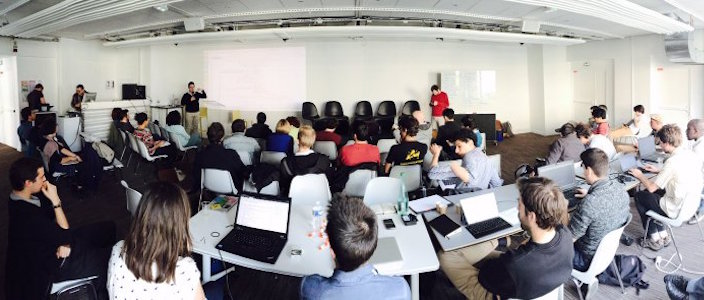

Hackathon #2
Le 15 et 16 Avril 2016 NUMA Paris

Objectifs:
- Poursuivre les ateliers initiés
- Réfléchir à la méthodologie et aux valeurs associées aux démarches de consultation en ligne
Une deuxième étape du cycle de hackathons Open Democracy Now a été organisée les 15 & 16 avril derniers à Numa, avec l’ensemble des partenaires ayant contribué à la première édition ainsi que toutes les équipes porteuses de projets ouverts (Open Source et/ou Open Data) à portée démocratique.
Ce hackathon a permis de présenter et poursuivre les travaux menés, de réfléchir à la méthodologie devant nécessairement accompagner la mise en place de tels outils autour de principes d'éthiques, de gouvernance et de transparence.
Programme
Jour #1
Table ronde : « Outils, méthodes et valeurs associés aux consultations publiques »
- Introduction : Benjamin Jean, Open Democracy Now!, Open Law, Inno3
- Yann Bonnet, Conseil National du Numérique
- Virgile Deville, DemocracyOS France
- Emmanuel Raviart, Etalab
- Sylvia Fredriksson (OKFN)
- Pascal Nicolle, DebatLab
Pitchs : Présentation des avancées réalisées par les groupes de travail constitués lors du dernier hackathon, et pitchs des nouveaux projets et ateliers
- Paul Richardet (Numa) et Benjamin Jean (inno³, Open Law) - Co-rédaction d'une charte Open Democracy Now
- Paul Forteza (Etalab) et Virgile Deville (DemocracyOS France) - Catalogue des initiatives CivicTech
- Virgile Deville et Caroline Corbal - Roadmap de DemocracyOS France
- Alain Buchotte, Développement autour de la plateforme DemocracyOS
- Jean-Marc Le Roux (#MaVoix) - Présentation d'une plateforme de test de vote en ligne utilisant la blockchain
- Sarah Rayczakowski & Sylvia Fredriksson (OKFN) - Design et outils de consultation
- Louis Margot Duclot (DemocracyOS France) - Blockchain & Démocratie
- Gilles Pradeau (BudgetParticipatif.Info) - Traduction d’un outil open source pour les budgets participatifs
- Jean-Baptiste Baraton (ambassador Holon Bitnation) - Grandma'Votation, objectif interface !
- Pierre-Marie Lecat (Polikif) – Présentation d'une plateforme de Serious Game politique
- Adrien Rogissart - Présentation de Nuances
Jour #2
Journée de hackathon : Développement de solutions open source pour la concertation publique, l'élaboration de la loi, le dialogue politique et collectif et l'évaluation de la politique publique. Les ateliers initiés lors du premier hackathon ont été poursuivis, et de nouveaux ont rejoint le projet.
Ateliers :
- Rédaction d’une charte : méthodes & valeurs associées aux plateformes de concertation en ligne: lien vers la charte
- Catalogue des initiatives et outils CivicTech, élaboration d’un quizz
- DemocracyOS : Atelier Roadmap
- DemocracyOS: Atelier Dev
- Nuances : cartographie personnalisée du paysage politique
- Blockchain & Democracy
- #MaVoix : Texte de loi augmenté
- Budget Participatif : traduction d’un outil
- Grandma'Votation : objectif interface !
- Design et consultations publiques
Compte rendu complet